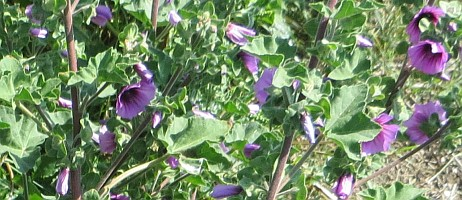
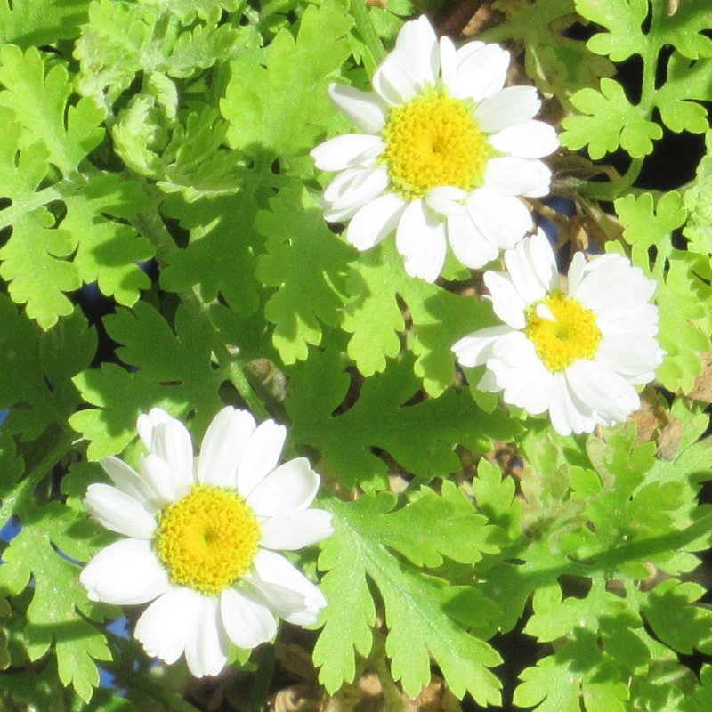
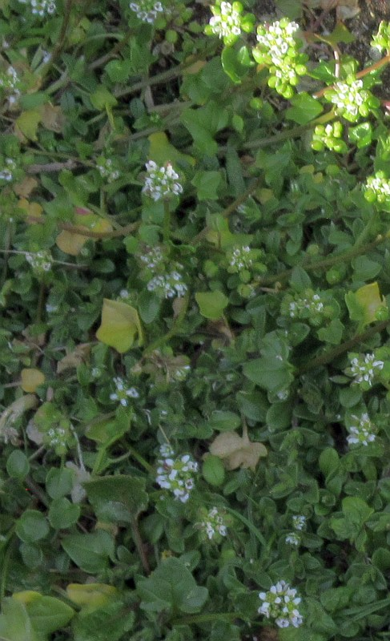
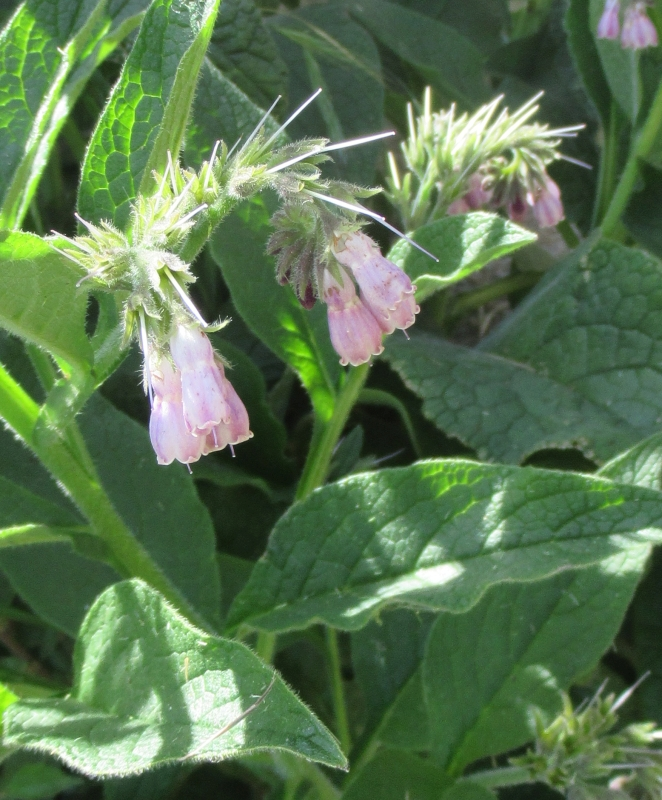
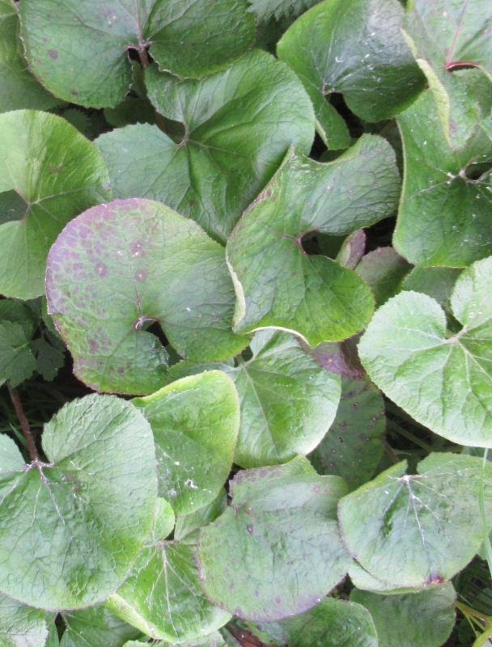
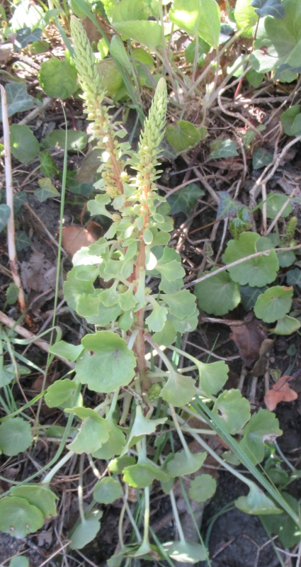
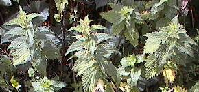

|
 |
 |
 |
 |
 |
V'chîn eune racachie d'èrmièdes d'aut'fais, les r'mièdes dé nouos vielles gens du tout temps pâssé, longtemps d'vant tch'i' n'y'eûsse dé docteurs ou, comme nou dîthait, dé méd'chîns. Car, i' faut dithe qué l'preunmyi méd'chîn Jèrriais fut appathemment Salomon Journieaux (Journeaux) contre la fîn du seizième siècl'ye. Et un diton nouos est resté, dépis don beîntôt quat' chents ans - "Savant comme Salomon Journieaux". Mais j'avons ouï à nouos anciens qué, "même du temps des grand-péthes dé nouos grand-péthes, i' n'y'avait qu'un pouôrre docteu en Jèrri à tchi nou-s-ouvrait des cauches par charité". Manque dé travas, bein seux!
J'en avons donné tchiquefais dans les Bulletîns par lé pâssé, dé ches r'mièdes, et y'en a acouo sans doute d'autres tchi n'sont pon înclius dans ch' tchi siet. Ou-s-en trouv'thez eune suée étout, dgia, dans l'Dictionnaire Jersiais-Français.
Cèrtains d'ches r'mièdes contre les maux 'taient connus étout ailleurs qu'en Jèrri, sait-che dans l's autres Îles ou en Nouormandie, et dans d'aut's pays, ou même en Angliétèrre. Mais la grand' partie sont vraiement Jèrriais. Et i' n'faut pon oublier qué hardi d'ieux né sont pon 'couo pèrdus. Y'a des gens d'nouos jours tchi s'en sèrvent comme lus gens s'en sèrvaient aut'fais et tchi y'ont acouo fouai hardi pus qu'ès docteurs.
N'en v'chîn don un assortiment tchi n'manqu'tha pon, nou-s-espéthe, d'întéthêt pouor nouos lecteurs.
Pouor donner d'l'appétit. (Viyiz pouor les maux d'tête.)
Pouor eune bliesseûthe, nou bouoillait des fielles dé p'tites mauves dans eune pînte et d'mie dg'ieau et nou réduîthait ch'la à eune pînte - pouor bangner la bliesseûthe atout. Nou faîthait sèrvi étout du beurre et d'la bra, mêlés.

Des brûleûthes, du ma, des copes et d's êcouocheûthes. Nou faîthait d'l'onguent pouor mett' dessus atout d'la console, en êcrasant et pêtrissant la réchinne. Ou bein étout, nou grattait la réchinne et nou m'ttait ch'la sus l'ma. Du savon est bouon pour des brûleûthes étout, et d'la flieu, dé l'hielle, d'la gelée, dé l'oing ou d'la boûthe dé vaque.
Comme calmant, nou prannait eune tîthaine dé menthe. Ou bein étout, du thée d'canmiéthe.
Faut porter eune pétite patate sus sé contre l'campre. Nou la rempliaiche quand ou fliêtrit. Et pouor lé campre étout nou porte un bouchon sus sé, et nou-s-êtreint d'ssus quand l'ma veint.
Eune tîthaine dé bouôrrage était bouonne pouor les gens dans la conseunmtion.
Des copes. (Viyiz pouor les brûleûthes.)
Pouor la coqueluche, prendre du sitho d'pavots, ou d'colînmachons. Et étout, dé l'ail dans d'l'ieau-d'vie et mettre chenna souos les pids et dans les mains. Ou acouo, en pendre eune pétite poutchie, d'ail, lé tou du co.
Un sîmpl'ye èrmiède pouor dgéthi les cors. Nou fait sèrvi des cratchillons. Ôtez la p'tite pé d'en d'ssous et cliutez l'cratchillon sus l'cor. Gardez ch'la aussi longtemps qu'pôssibl'ye. Et, la même chose pouor des dueuthillons.
Eune tîthaine dé fielles dé grâsse molène servait pouor la diarrhée. Et eune tîthaine dé j'tons d'ronches étout.
D's êcouocheûthes. (Viyiz pouor les brûleûthes.)

Pouor eune enfliammâtion d'ponmons (“pneumonia" en Angl.) eune dgéthîthon s'faithait atout des flieurs dé pas-d'âne. Et i' y'a eune copie dé ch't' èrchette au Musée d'La Sociêté Jèrriaise, la r'chette même ayant 'té trouvée dans eune bibl'ye dé la date dé 1688.
Pouor êtantchi l'sang. Nou-s-êtanque lé sang atout un tchias dé p'tun, atout d's ithangnies, des fielles d'orvale, du vîn, dé l'ieau-d'vie sus des rayons d'flieurs dé bliancs lis.
Pouor eune êteurse, nou fait sèrvi dé l'ieau sédative tchi s'fait atout d'la sausse et du camphre.
Les gens tch'avaient l'êtropisie mangeaient du pèrsi cru, et en beurrée. D'aut's èrmièdes étaient d'béthe sus des fielles dé genêt, dé mangi tout pliein d'pouothé bouoilli, dé béthe sus du potithon, et sus des réchinnes dé doques. Tout ch'la sèrvait étout contre la pièrre, la gravelle et pouor les gens prîns sus lus ieau.
I' faut béthe dé l'ieau pannée pouor rabattre d'la fièvre.
Nou prannait du sitho d'colînmachons (la r'chette est à la fîn) quand nou-s-avait du fraid. Eune aut' chose à prendre contre lé fraid est du nièr dginne (du dginne sus des néthes gradiles). Et nou met ses pids dans un bain d'moutarde, pouor arrêter du fraid. Pouor du fraid sus l'estonma, nou bait sus du tèrrêtre (“ lierre terrestre ” en Fr.). Et nou peut mettre un empliâtre d'moutarde et dg'hielle douoche.

Nou met des fielles dé cratchillons sus des frouëts. Un autre èrmiède pouor arrêter des frouëts est d'pendre eune muscade contre sa chai. Nou faîthait sèrvi des fielles d'orvale étout, pouor des frouëts.
Pouor la goutte. Envelopper des fielles d'orvale lé tou du pid, a l'entou du gros orté, pouor haler l'enflieunme. Auprès un p'tit brîn, rempliaichi ch'la atout d'autres fielles.
La gravelle. (Viyiz pouor l'êtropisie.)
L'ieau. (Viyiz pouor l'êtropisie)
Pouor l'îndigestion, eune tîthaine dé fielles dé lianne est considéthée souveraine. Et, du thée d'canmiéthe. Un autre èrmiède pouor l'îndigestion était d'prendre des tchênelles râpées dans du lait. Ou acouo, d'prendre dé l'ieau-d'vie camphrée.
Faut béthe du safran et du rouoge vin pouor èrmiédgi l'jaûnisse. Pouor chutte maladie nou bait étout sus d'l'êpinne-vinnette. Et aut'fais nou bouoillait du cannevi et nou prannait la bouoillêtuthe, contre lé jaûnisse.
Du ma. (Viyiz pouor les brûleûthes.)
Ma dans l'corps. Nou prend du dginne sus des preunelles.
Ma dans l'dos. Nou met un empliâtre d'moutarde. Et nou donne eune ronde atout d's ortchies, pouor lé ma dans l'dos.
Ma' la veue. Nou lave ses ièrs dans dé l'ieau d'thée.

Contre lé mauvais sang, nou bait sus d's ortchies comme méd'cinne, sustout au r'nouvé. Nou vèrse dé l'ieau bouoillante sus l's ortchies. Et pis étout, d'la réchinne dé doques. Béthe dessus au r'nouvé pouor lé mauvais sang. Et acouo, prendre du parméthan d'tchene trempé dans du blianc d'œu.
Les maux d'tête. Nou prannait du thée d'canmiéthe (et pouor réglier l'corps et purifier l'sang au r'nouvé étout), un thée d'fielles dé p'tites mauves, ou un thée d'sèrpiliéthe (ou thŷmbe sauvage). Eune tâssée d'thée d'canmiéthe à jeun, étout, 'tait bouonne pouor donner d'l'appétit.
Nou fait eune tîthaine dé fielles dé louothi pouor bangner ses ièrs quand nou-s-a l'orian. Mais y'a des gens tch'aiment mus des fielles dé thée dans d'la mousselinne pouor mettre sus l'orian. Pis étout, en faîthant l'sîngne dé la Crouaix neuf fais, atout eune bague dé neuches, sus l'yi, nou dêcomptait l'orian en même temps, l's uns l'faîthant en Latîn d'aut's en Français.
Les ouothipieaux. Mettre d'la couenne dé lard rôtie sus la gorge et des p'tites châlottes rôties dans l's ouothelles.
Pouor dissiper la pièrre, nou prend des flieurs dé soufre et du dginne. (Viyiz étout pouor l'êtropisie.)
Nou frotte atout des fielles dé doques sus des pitcheûthes d'ortchies. Pouor des pitcheûthes d'însectes, ch'est atout des fielles dé pliantain ; ou atout d'la réchinne dé pliantain, étout.
Pouor renforchi les ponmons, prendre du sitho d'colînmachons.
 Des pouèrs. Quand l's avièrs ont d'la compangnie dans les g'veux, vèrsez dé l'ieau bouoillante sus des pliantes d'apathitouaithe et lavez les g'veux dans ch'la.
Des pouèrs. Quand l's avièrs ont d'la compangnie dans les g'veux, vèrsez dé l'ieau bouoillante sus des pliantes d'apathitouaithe et lavez les g'veux dans ch'la.
Pouor purifier l'sang. (Viyiz pour les maux d'tête.)
Quand nou-s-avait besoin d'sé ravigoter, nou b'vait un thée d'fielles dé lianne bouoillies. Ou un thée d'flieurs dé seu. Nou m'ttait les flieurs dans d'l'ieau, mais fallait aver l'soin d'les tchilyi lé jour dé la Saint Jean d'vant méjeu.
Pouor réglier l'corps. (Viyiz pouor les maux d'tête.)
Un r'miède pouor les rhonmatisses. I' faut prendre eune démié-boutillie d'rhonme et des piments ; écraser un mio les côsses dé piments ('chillis' en Angl.) et les mettre dans l'rhonme, et pis bouchi la boutillie et la laîssi pouor deux ou trais s'maines. Mettre chenna, comme poussot ou empliâtre, ou autrement, sus la partie d'sé-même tchi fait ma. Eune aut' chose qué nou peut faithe est d'porter eune pétite patate sus sé, contre les rhonmatisses. Et, acouothe un autre èrmiède est d'bouoilli d'la pouothette (graine de pouothé) - eune onche dans eune pînte dg'ieau. Ou béthe eune tîthaine d'entaillies bouoillies, dé pîssenliets, dé graine dé céléri, dé fielles dé frêne ou d'êcorche dé frêne. Pis étout, y'a eune pétite èrchette bein connue, pouor frotter sus des rhonmatisses et pouor la sciatique - eune part dé parafinne et deux parts dg'hielle dé pid d'bœu.
Contre des rubîns, nou met des flieurs dé soufre et d'la molle graisse.
La sciatique. (Viyiz pouor les rhonmatisses.)
Un r'miède pouor la toux est d'prendre du sitho d'cârottes, fait atout dé l'ieau et du jaune chucre sus des carottes mînchies ou quartellées. Et du sitho d'jus d'colînmachons, étout. Ou acouo, du pas-d'ane et du ricolisse bouoilli.
Des fielles dé doques bouoillies sont bouonnes pouor des ulcéthes. Quand ch'est pouor des ulcéthes ès gambes, nou bouort d'la molle graisse et nou met ch'la d'ssus en enveloppant atout des fielles dé chours. Ou bein étout, des fielles dé chours sus d'la graisse dé pithot.
Pouor des veines varices, mettez des fielles dé console souos l'ieau eune volée, et pis faites-les sèrvi à envelopper.
Pouor des vèrs. Mangiz d'l'ail.
Y'avait acouo bein des r'mièdes et dgéthissements tch'étaient connus sustout par nouos anciens, en faîthant sèrvi des pliantes ou des sèrcl'yes, comme onguents ou poussots, et étout bein seux comme tîthaines. Ou trouv'thez tout ch'la dans l'Dictionnaire Jersiais-Français. Et, dé penser qué tant d'ches sîmpl'yes èrmièdes, sans pâler des grands, tch'étaient faits sèrvi en toute crianche et fouai, né valaient pon seulement eune fréluque contre hardi d'ches difféthents maux, les grands sustout - hélas, hélas! Ès grands maux, les grands r'mièdes. Véthe, ch'est là l'vièr diton. Comme quand nou-s-allait s'faithe dêcompter ou charmer, pouor un d'péthissement dé tchique sorte, tch'était ofûche eune conseunmtion galopinne, ou pouor eune colique cordée, et cétéra. Ou quand fallait aller siez l'forgeux pouor sé faithe êrachi eune dent atout ses pînchettes dé forge ! Mînséthe dé mînséthe, eh - sapresti - nouos vièrs ont-i' deu souffri! Eh bein, qué nou dévthait être èrmèrciants d'être à vivre ès temps d'à ch't heu, au lyi d'dans ches temps-là! Saluons, don, acouothe eune fais, lé couothage et la dueurcheu d'nouos vielles gens.
 Pouor faithe sorti la pouôrrituthe d'un frouët, d'un dé, et cétéra, nou poussotait atout du tèrrêtre (' lierre terrestre ' en Fr.).
Pouor faithe sorti la pouôrrituthe d'un frouët, d'un dé, et cétéra, nou poussotait atout du tèrrêtre (' lierre terrestre ' en Fr.).
Viyiz étout: